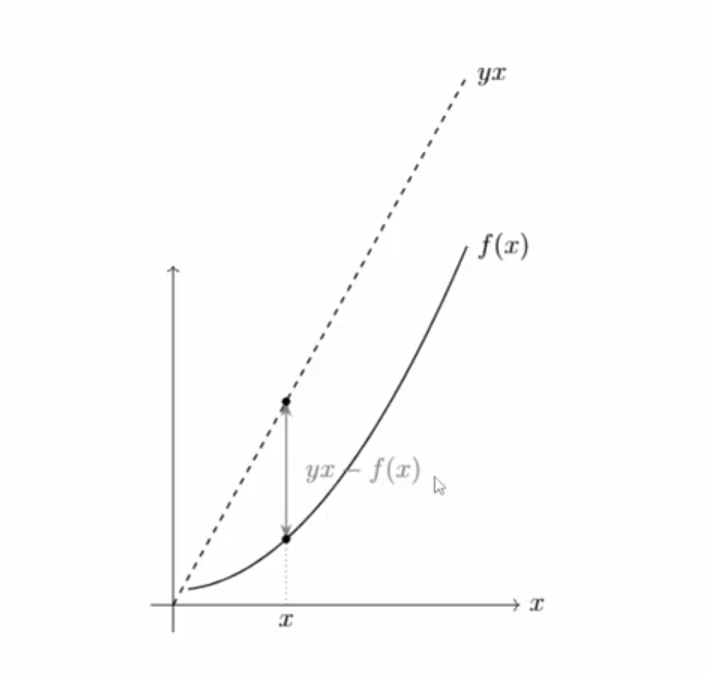
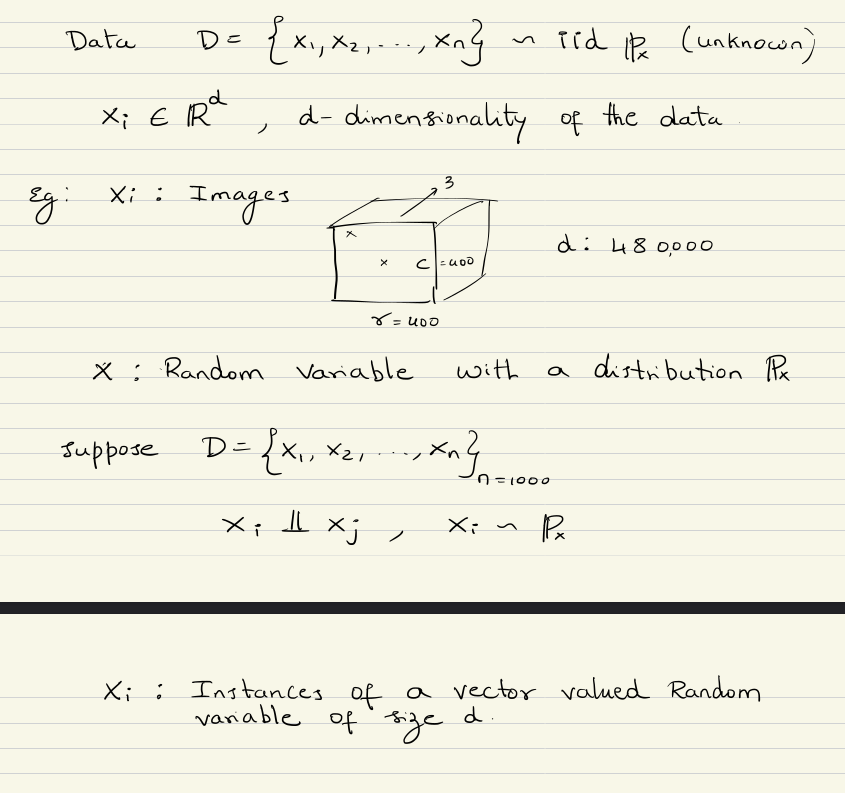
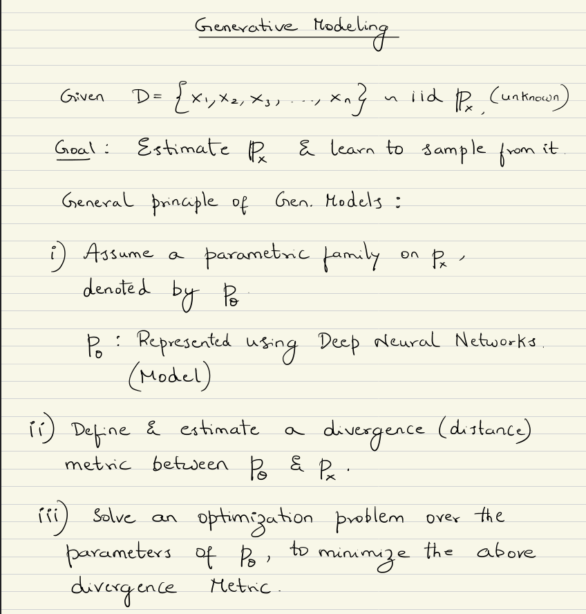
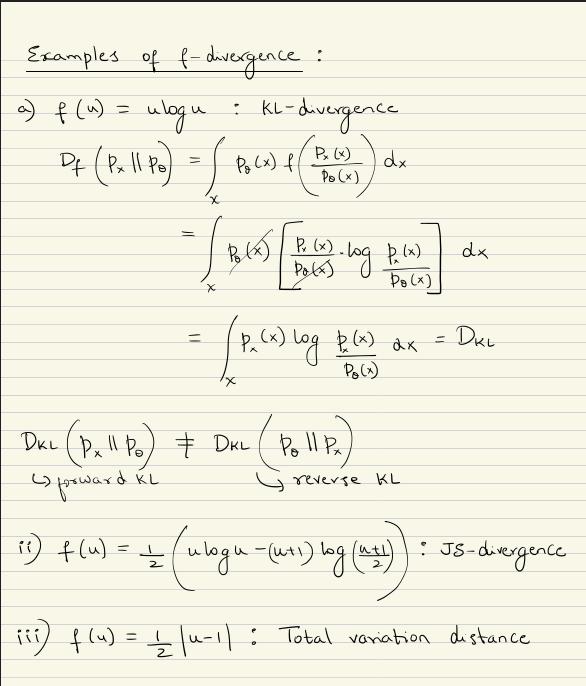
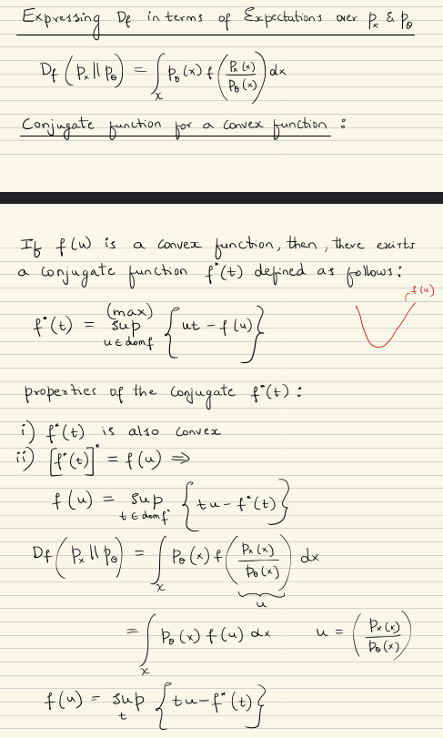
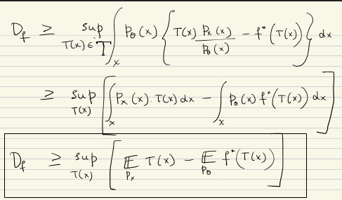
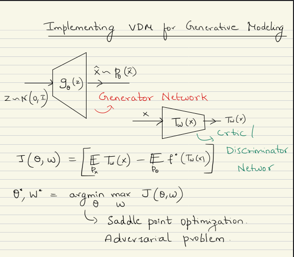

Generative Adversarial Networks
In this chapter, we'll explore how GANs work and different architectures have been proposed,but before that, go through the prerequisites.
Probability Density (\(p(x)\)) v/s Probability Distribution (\(\mathbb{P}(x)\))
Discrete Variable:
\[P(X = x) = p(x) \quad \text{(Probability Mass Function)}\] \[\mathbb{P}(X \in A) = \sum_{x \in A} p(x)\]Continuous Variable:
No Probability Mass Function exists for continous variables (Cant find probability at a single point), but \[\mathbb{P}(X \in A) = \int_A p(x) \, dx\]i.i.d (Independent and Identically Distributed)
Identical:
If 2 R.V's is drawn from the same distribution, then it is said to be identical.Independent:
If the outcome of one R.V does not affect the outcome of another R.V, then they are said to be independent.Consider 2 random variables \(X_1, X_2\) that are independent.
Then:
\[P(X_1 = x_1 | X_2 = x_2) = P(X_1 = x_1)\]Convex Conjugate
Consider the graph given below.

Here, \( f(x) \) is some function(convex or non-convex) which we're interested in finding the convex conjugate of.
and now we pick an arbitrary slope y,
at every point x, there's a vertical gap btw the line and the function \( f(x) \)
Conjugate function defines, what is the maximum possible gap over all of x, given the slope y?
The convex conjugate of \( f \), denoted \( f^*(y) \), is defined as: \[ f^*(y) = \sup_{x} \left\{ yx - f(x) \right\} \]Ex: Consider the function \( f(x) \) mapped in the range \([0, 1)\) and \( f(x) = 0 \) for all \( x \in [0, 1) \).
\[max_{x \in [0, 1)} \{ f(x) \} = undefined\] \[sup_{x \in [0, 1)} \{ f(x) \} = 1\]Variational Divergence Minimization









Generative Modelling via VDM

